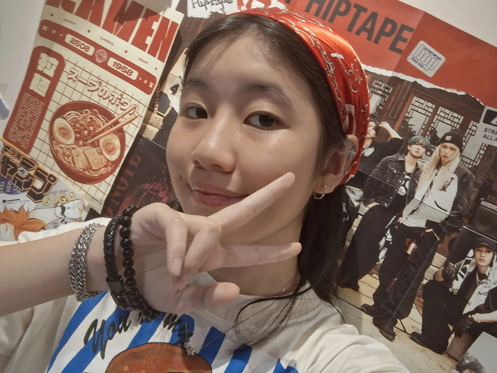

Tentang Website Ini ✨
Website ini dibuat sebagai media pembelajaran untuk mengenal Sustainable Development Goals (SDGs), memahami tantangan pembangunan, dan melihat pentingnya kerja sama dalam mewujudkan masa depan yang berkelanjutan.
Profil Pembuat

-
Nama: Mikaela Rainna Servia Tedjasukmana
Sekolah: SMP Santa Ursula Jakarta
Kelas: IX-3
Nomor absen: 29
⫷ Sedikit Mengenai Banner ⫸
Banner yang saya buat pada bagian paling atas website saya memiliki makna yang dalam bagi saya. Seperti yang bisa kalian lihat, ada banyak tokoh-tokoh dalam banner saya, dan mereka semua memiliki perjuangan mereka masing-masing.
| No. | Nama | Asal | Perjuangan ☆ |
|---|---|---|---|
| 1. | Malala Yousafzai | Pakistan | Malala Yousafzai berani menyuarakan hak pendidikan anak perempuan di Lembah Swat, Pakistan, sejak usia 11 tahun melalui tulisan saat kelompok teroris melarang perempuan bersekolah. Meski ia ditembak oleh teroris pada usia 15 tahun karena perjuangannya, peristiwa tersebut tidak menghentikan langkahnya untuk terus berkampanye di tingkat global. Ia kemudian mendirikan Malala Fund dan menjadi penerima Hadiah Nobel Perdamaian termuda pada tahun 2014 untuk memperjuangkan akses pendidikan bagi anak perempuan di seluruh dunia. |
| 2. | Abdurrahman Wahid | Indonesia | K.H. Abdurrahman Wahid (Gus Dur), terkenal sebagai presiden keempat Indonesia mendedikasikan hidupnya untuk membela kaum minoritas dan kelompok tertindas dari berbagai bentuk diskriminasi di Indonesia. Saat menjabat sebagai presiden, ia secara berani mencabut Instruksi Presiden Nomor 14 Tahun 1967 untuk memulihkan hak-hak sipil masyarakat Tionghoa serta mengakui Konghucu sebagai agama resmi. Melalui pendekatan yang mengutamakan kemanusiaan di atas sekat identitas, Gus Dur terus memperjuangkan perdamaian dan kesetaraan hak bagi seluruh warga negara, termasuk masyarakat Papua dan penganut kepercayaan lokal. |
| 3. | Katniss Everdeen | The Hunger Games - Suzanne Collins | Karakter fiksi terkenal Katniss Everdeen tanpa sengaja menyalakan api perlawanan terhadap tirani Capitol. Ia menolak menjadi sekadar pion dalam permainan politik yang kejam dan memilih untuk menyuarakan penderitaan seluruh distrik yang tertindas. Dengan keberanian dan busur panahnya sebagai simbol Mockingjay, Katniss berhasil meruntuhkan rezim diktator demi memperjuangkan kebebasan dan kesetaraan bagi rakyat Panem. |
| 4. | Emma Watson | Inggris | AI Overview Sebagai Duta Besar Perempuan PBB, Emma Watson memperjuangkan keadilan gender dengan meluncurkan kampanye HeForShe yang mengajak laki-laki untuk turut serta menghapus ketidaksetaraan. Ia memanfaatkan platform globalnya untuk menyuarakan pentingnya akses pendidikan yang adil bagi anak perempuan di berbagai belahan dunia serta mendesak perlindungan hukum bagi perempuan di tempat kerja. Melalui pidato-pidato yang kuat dan aksi nyata, Watson membuktikan bahwa perjuangan demi keadilan adalah tanggung jawab bersama seluruh umat manusia tanpa memandang gender. |
| 5. | Ethan Nakamura | Percy Jackson and the Olympians - Rick Riordan | Karakter fiksi yang merupakan anak dari Nemesis, dewi Yunani dari keadilan dan pembalasan, merupakan karakter yang berjuang sangat keras untuk meraih keadilan untuk anak-anak yang terlantar, dan dia akan merelakan apapun, bahkan matanya sendiri demi keadilan tersebut tercapai. |
| 6. | Fathimah Azzahra | Indonesia | Sebagai Wakil Ketua BEM UI 2026 sekaligus mahasiswi Fakultas Kedokteran, Fathimah Azzahra lantang menyuarkaan kritik berbasis data terhadap berbagai kebijakan publik yang dinilai belum memprioritaskan kebutuhan dasar rakyat. Ia berdiri di garis depan aksi demonstrasi menuntut pemberantasan KKN, perlindungan ruang sipil, serta keadilan sosial, bahkan sanggup menjaga ketenangan satu badan demo UI di tengah kerumunan meski harus berhadapan langsung dengan barikade aparat. Dengan memadukan ketajaman nalar akademis dan keberanian moral, Fathimah membuktikan bahwa kepemimpinan perempuan mampu menjadi motor penggerak mahasiswa untuk mengawal hak-hak masyarakat |
| 7. | Nelson Mandela | Afrika Selatan | Nelson Mandela berjuang melawan sistem apartheid demi menghapus diskriminasi rasial dan menegakkan kesetaraan di Afrika Selatan. Ia bertahan selama 27 tahun di penjara tanpa meninggalkan keyakinannya pada keadilan dan hak asasi manusia. Setelah bebas, ia memimpin rekonsiliasi nasional dan menjadi presiden kulit hitam pertama Afrika Selatan pada 1994. |
| 8. | Nausicaä | Nausicaä of the Valley of the Wind - Miyazaki Hayao | Di tengah dunia pasca-apokaliptik yang dilanda kebencian dan ketakutan, Nausicaä berani menentang keserakahan kerajaan-kerajaan besar yang ingin memusnahkan alam demi ambisi kekuasaan. Ia memilih jalan empati dengan berusaha memahami ekosistem Hutan Beracun dan para Ohmu, membuktikan bahwa keadilan sejati mencakup hak hidup seluruh makhluk di bumi. Melalui pengorbanan nyawanya di hadapan amukan pasukan serangga raksasa, Nausicaä akhirnya berhasil menghentikan siklus peperangan dan membawa harapan perdamaian bagi umat manusia maupun alam semesta. |
| 9. | Harriet Tubman | Amerika | Setelah berhasil melarikan diri dari belenggu perbudakan pada tahun 1849, Harriet Tubman justru mempertaruhkan nyawanya dengan kembali ke wilayah Selatan sebanyak 13 kali untuk menyelamatkan puluhan orang melalui jaringan rahasia Underground Railroad. Keberaniannya berlanjut selama Perang Saudara Amerika ketika ia bertugas sebagai pengintai bersenjata sekaligus memandu operasi militer di Sungai Combahee yang berhasil membebaskan lebih dari 700 orang yang diperbudak. Hingga akhir hayatnya, ia tetap teguh memperjuangkan keadilan sosial, hak-hak sipil, serta hak pilih bagi kaum perempuan demi kesetaraan martabat manusia |
| 10. | Zohran Mamdani | Amerika | Perjuangan Zohran Mamdani bermula dari perannya sebagai konselor pencegahan penyitaan rumah di Queens serta anggota Majelis Negara Bagian New York yang aktif membela kelompok rentan. Ia terlibat langsung dalam berbagai advokasi akar rumput, mulai dari mengikuti mogok makan selama 15 hari untuk memperjuangkan keringanan utang senilai lebih dari $450 juta bagi pengemudi taksi hingga mendorong program percontohan bus gratis bagi warga. Sebagai Wali Kota New York City sejak Januari 2026, Mamdani melanjutkan agenda keadilan sosial dan ekonominya melalui kebijakan pembekuan biaya sewa apartemen yang teregulasi, perluasan investasi pengasuhan anak universal, serta perlindungan hak-hak pekerja dan penyewa. |
Apa kesamaan dari semua figur ini?
Mereka semua berjuang untuk banyak hal yang berbeda, namun ada satu hal yang menyatukan mereka semua. Semua karakter di atas memperjuangkan keadilan dan kesetaraan. Baik untuk kesetaraan gender, perlindungan anak terlantar, kebebasan berpendapat, kebebasan ras, keadilan manusia dan alam, melindungi hak sendiri, hingga melawan korupsi. Tentu permasalahan dan ketidakadilan masih banyak sekali dan masih lebih banyak lagi orang berjuang keras untuk melawannya, walau belum terdengar. Namun figur-figur ini semua adalah karakter-karakter yang berhasil terdengar, hingga berhasil membawa kemajuan bagi negara atau lingkungan mereka masing-masing.
Tujuan Pembuatan
Melalui proyek ini, pembaca diharapkan dapat memahami bahwa tujuan pembangunan berkelanjutan saling berhubungan dan membutuhkan peran banyak pihak. Website ini juga menjadi sarana untuk mengembangkan keterampilan mencari informasi, menyusun materi, dan menyajikannya melalui teknologi digital.